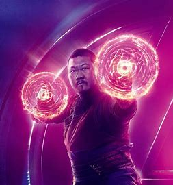
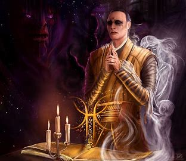

Movie Images



Release Year: 2016
Explore the mystical arts with Dr. Stephen Strange in "Doctor Strange." Experience mind-bending visuals, ancient secrets, and a hero's journey of self-discovery. Dr. Stephen Strange, a brilliant but arrogant neurosurgeon, loses the use of his hands in a car accident. Desperate to regain his former life, he embarks on a journey to Kamar-Taj in Nepal, seeking the help of the Ancient One. There, he discovers the world of sorcery and becomes the Sorcerer Supreme, tasked with defending the Earth against mystical threats. As he faces the malevolent sorcerer Kaecilius and confronts the powerful entity Dormammu, Strange must embrace his role as a hero and master the mystic arts.